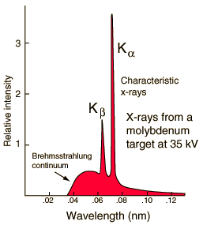

Characteristic X-Rays
|

|
Characteristic x-rays are emitted from heavy elements when their electrons make transitions between the lower atomic energy levels. The characteristic x-rays emission which shown as two sharp peaks in the illustration at left occur when vacancies are produced in the n=1 or K-shell of the atom and electrons drop down from above to fill the gap. The x-rays produced by transitions from the n=2 to n=1 levels are called K-alpha x-rays, and those for the n=3->1 transiton are called K-beta x-rays.
Transitions to the n=2 or L-shell are designated as L x-rays (n=3->2 is L-alpha, n=4->2 is L-beta, etc. ). The continuous distribution of x-rays which forms the base for the two sharp peaks at left is called "bremsstrahlung" radiation.
|
X-ray production typically involves bombarding a metal target in an x-ray tube with high speed electrons which have been accelerated by tens to hundreds of kilovolts of potential. The bombarding electrons can eject electrons from the inner shells of the atoms of the metal target. Those vacancies will be quickly filled by electrons dropping down from higher levels, emitting x-rays with sharply defined frequencies associated with the difference between the atomic energy levels of the target atoms.
The frequencies of the characteristic x-rays can be predicted from the Bohr model . Moseley measured the frequencies of the characteristic x-rays from a large fraction of the elements of the periodic table and produces a plot of them which is now called a "Moseley plot".
Characteristic x-rays are used for the investigation of crystal structure by x-ray diffraction. Crystal lattice dimensions may be determined with the use of Bragg's law in a Bragg spectrometer.
|